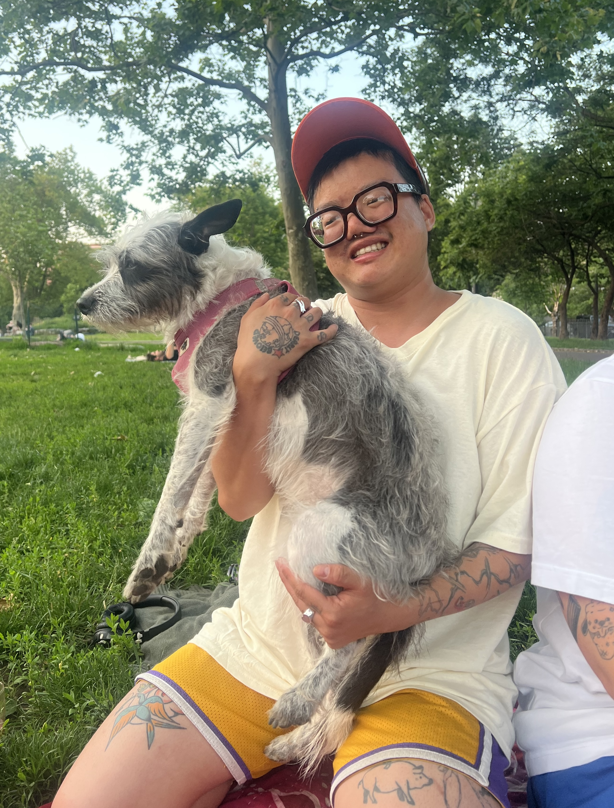
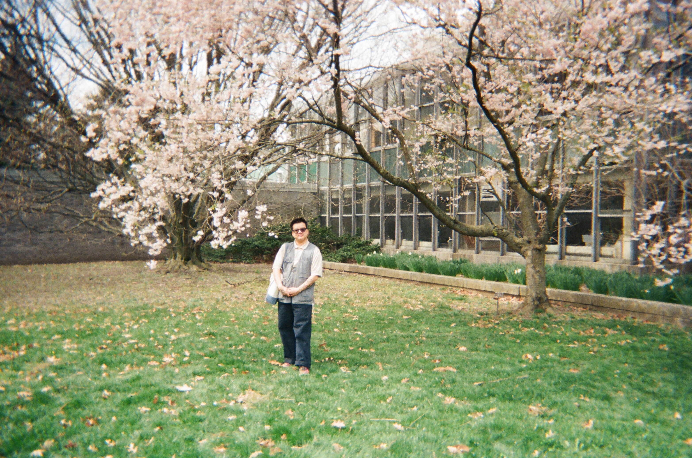

Andie Sheridan (he/they) is a trans Chinese/American poet with an
MFA from University of Massachusetts, Boston. He is the author of
the microchapbook "My Mustache Which Is Very Young" (Fifth Wheel
Press 2026). Andie’s work has also been featured in Dilettante
Army, The Journal, and with Mass Poetry, among others.
